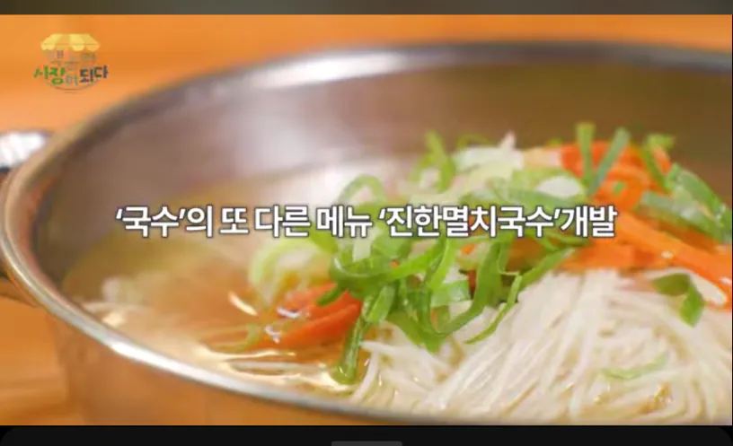

헉

헉
이야~ 그럼 다음은 마한멸치국수인가
아뇨 변한잔치국수입니다
삼한제일국수!!!!!!!!
또 쟤여?
국수에 진한멸치를 넣지 말라는 법이 있을까?
나여 백진한!
眞-멸치국수
담백한은어라멘 그거임?
나는 연한멸치국수 개발함
말린은어국수 만들어보자
은어라멘주세요 진한맛으로
'스팸'의 또 다른 메뉴 '원가줄이고돈빨아먹겠햄' 개발
진하다고 해봐야 보통 국수의 10배~12배
ㅋㅋㅋ 그러면 존나진한건데??
존나 진하다아아아아아아앗~!!
대체 얼마나 진한건지 감도 안옴;;
나도 국수집열고싶어...
냉잔치국수도 넣을꺼고 싼가격에 한사발 주고싶어...
놈들은... 정보를 먹고 있는거야...!
점보국수는 없나요
이제 조만간 더진한멸치육수 이런 이름으로 팔기 시작하겠지??
여윾시 킹갓제네럴빛황울트라빽센세님이십니다!
이야 저것도 상표권 등록하시지 ㅠㅠ 다 따라하면 어쩌려고 ㅠㅠ
하아 미치겠네... 이게 쓰던 멸치입니까? 새 멸치를 사다가...
내 인생최고 잔치국수는 어느 익산의 교회에서 예배끝나고 먹었던 국수임 아직 그만한 국수집을 못찾음
멸치를 사러갔는데 잘못해서 해앰써는 기계를 사버린거야~~